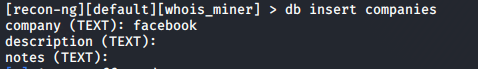
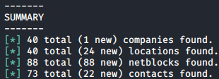

whois_miner
Path: recon/companies-multi/whois_miner
Uses the ARIN Whois RWS to harvest companies, locations, netblocks, and contacts
associated with the given company search string.
Then it updates the respective tables with the results.
marketplace search whois
marketpace info recon/companies-multi/whois_miner #informations about the module
marketplace install recon/companies-multi/whois_miner #install this module
modules load recon/companies-multi/whois_miner
we have to insert the name of the
company name when it ask for
Company(TEXT): the other parameters are optional
  To see the results
show companies
show locations
show netblocks
show contacts
If give error
[!] HTTPSConnectionPool(host='whois.arin.net', port=443): Max retries exceeded with url: /rest/org/COMPANY (Caused by SSLError(SSLError("bad handshake: Error([('SSL routines', 'tls_process_ske_dhe', 'dh key too small')])"))).
[!] Something broken? See https://github.com/lanmaster53/recon-ng/wiki/Troubleshooting#issue-reporting.comment the last line of the file /etc/ssl/openssl.cnf
#CipherString = DEFAULT@SECLEVEL=2